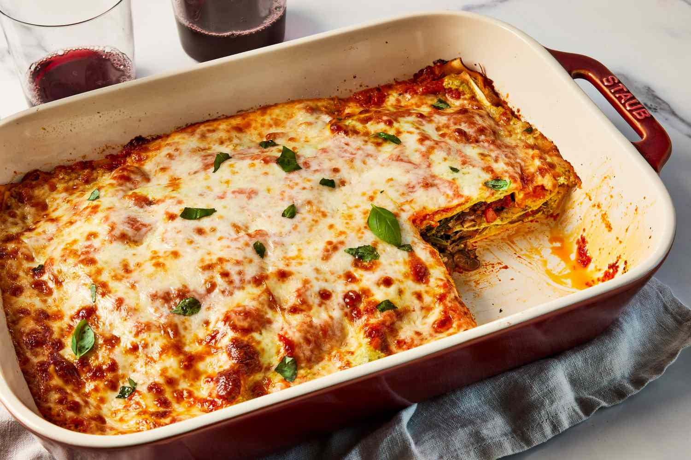

Back
Lasagna

Description
A hearty lasagna recipe that is simple and quick to make. Perfect for beginners who want to try their hand at
homemade lasagna for the first time.
Ingredients
- 1 pound lean ground beef
- 1 (32 ounce) jar spaghetti sauce
- 32 ounces cottage cheese
- 3 cups shredded mozzarella cheese, divided
- 2 eggs
- 1/2 cup grated Parmesan cheese
- 2 teaspoons dried parsley
- Salt to taste
- Ground black pepper to taste
- 9 lasagna noodles
- 1/2 cup water
Steps
- Gather all ingredients and preheat the oven to 350 degrees F (175 degrees C).
- Heat a large skillet over mdeium-high heat. Cook and stir ground beef in the hot skillet until browned and
crumbly, 8 to 10 minutes. Drain and discard grease. Stir in the spaghetti sauce and simmer for 5 minutes.
- Combine cottage cheese, 2 cups of mozzarella cheese, eggs, 1/2 of the grated Parmesan cheese, dried parsley,
salt, and pepper in a large bowl.
- Spread 3/4 cup of sauce in a 9x13-inch baking dish. Cover with 3 uncooked lasagna noodles, 1 3/4 cups of
cheesem mixture, and 1/4 cup sauce; repeat layers once more. Top with remaining 3 noodles, sauce,
mozzarella, and Parmesan cheese. Pour 1/2 cup water along the edges of the dish. Cover tightly with
aluminium foil.
- Bake in the preheated oven for 45minutes. Uncover andb ake for an additional 10 minutes. Let stand 10
minutes before serving.
- Serve and enjoy!